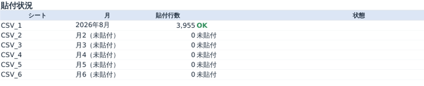
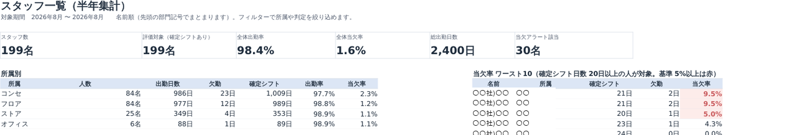
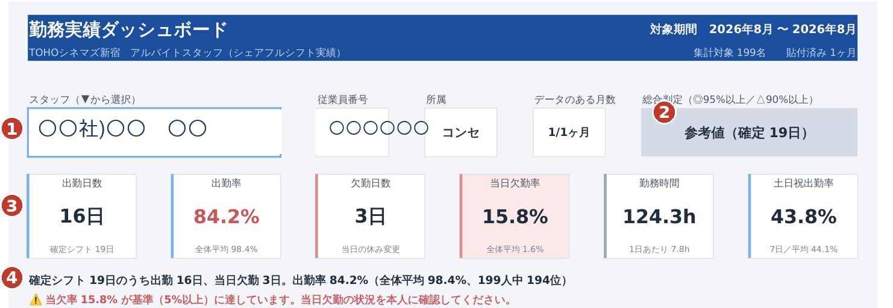

目的 シェアフルシフトのシフトCSVを月1回貼るだけで、スタッフごとの出勤日数・出勤率・当欠率（当日に休みへ変更した割合）・勤務時間を半年分まとめて表示します。契約更新の面談で「あなたの実績はこうだから、この評価です」を数字と図で示し、本人の納得感につなげるためのツールです。
毎月の流れ ― 3ステップ。慣れれば5分
STEP 1CSVを貼る
シェアフルシフトから前月1ヶ月分（月初〜月末）のシフトCSVを出力し、Excelで開く。
全選択コピー（Ctrl+A → Ctrl+C）して、その月の「CSV_○」シートの
A1セルへ貼付。
ヘッダー行ごと貼ります。1ヶ月目はCSV_1、2ヶ月目はCSV_2…と古い月から順に。
STEP 2貼付状況を確認
「使い方」シートの
貼付状況に「2026年8月／OK」と出ればOK。
「※」が出たら初回セットアップガイド2ページ目の表で対処。
貼り直すときは、そのシートを全選択→Deleteしてから貼り付け。
STEP 3選んで印刷
「ダッシュボード」でスタッフ名を選ぶ（▼から選択、または氏名を入力）。数字とグラフがその場で切り替わるので、
A4縦1枚で印刷して面談へ。
PDFは「PDF出力」シートで ファイル → エクスポート → PDF/XPS。
| A | B | C | D | … |
|---|
| 1 | 募集シフトの日付 | 募集店舗 | 応募ステータス | 開始時間 | … |
|---|
| 2 | 2026/08/01 | TC新宿 | 確定（シフト作成） | 7:00 | … |
|---|
| 3 | 2026/08/01 | TC新宿 | 確定 | 20:00 | … |
|---|
【図1】CSV_1〜6 ― 1行目のヘッダーごとオレンジのA1セルへ貼り付け（並べ替え不要）

【図2】使い方シートの貼付状況 ― 貼った月と行数、「OK」を確認

【図3】スタッフ一覧 ― 全員分を貼るだけで自動作成。面談の順番決めや所属間の比較に（※氏名は伏せています）
スタッフ一覧でできること
全体の出勤率・当欠率／所属別の平均／当欠率ワースト10（確定シフト20日以上が対象）。フィルターで所属や判定を絞り込めます。1人ずつの詳細はダッシュボードで。
画面の見方 ― 上でスタッフを選ぶ → 下の数字とグラフを見る

【図4】ダッシュボード上部 ― ここだけで面談の話が8割できます（※氏名・従業員番号は伏せています）
1スタッフ選択 ▼から選ぶか氏名を入力。右に従業員番号・所属・データのある月数が出ます
2総合判定 ◎良好（95%以上）／△注意（90%以上）／✕要改善。確定シフトが20日未満の人は判定を出さず「参考値」と表示します
36つの数字 出勤日数・出勤率・欠勤日数・当日欠勤率・勤務時間・土日祝出勤率。当欠率が基準以上なら赤く強調されます
4一文サマリーと警告 面談でそのまま読み上げる文（全体平均と順位入り）。基準超えの人だけ赤い警告行が出ます
数字の定義 出勤率 ＝ 出勤日数 ÷ 確定シフト日数（出勤＋当日欠勤） ／ 当欠率 ＝ 当日に「休み」へ変更した日数 ÷ 確定シフト日数（前日までの変更は含みません） ／ 土日祝出勤率 ＝ 土日祝・繁忙日（GW・お盆・年末年始）の出勤日数 ÷ 出勤日数
数が合わないと感じたら ― よくある原因
- 貼付状況に「※」が無いか確認（前月の行が残ると月がずれます）
- 貼り直しは全選択→Deleteしてから
- 同じ人が2人に見える → 従業員番号が違います
- 「参考値」は出勤率が低い意味ではなく、日数が少ないだけです
- 土日祝出勤率が低い → 「祝日・繁忙日」の登録状況を確認
- 欠勤が多い → 【図12】で店側都合の当日変更が無いか確認